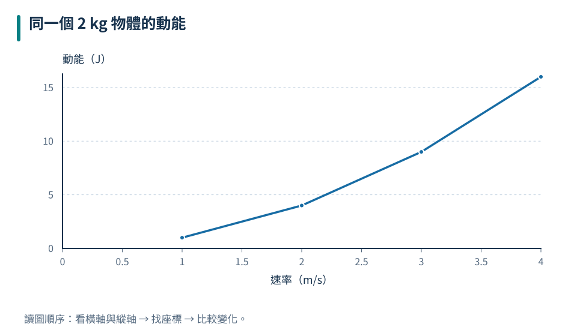
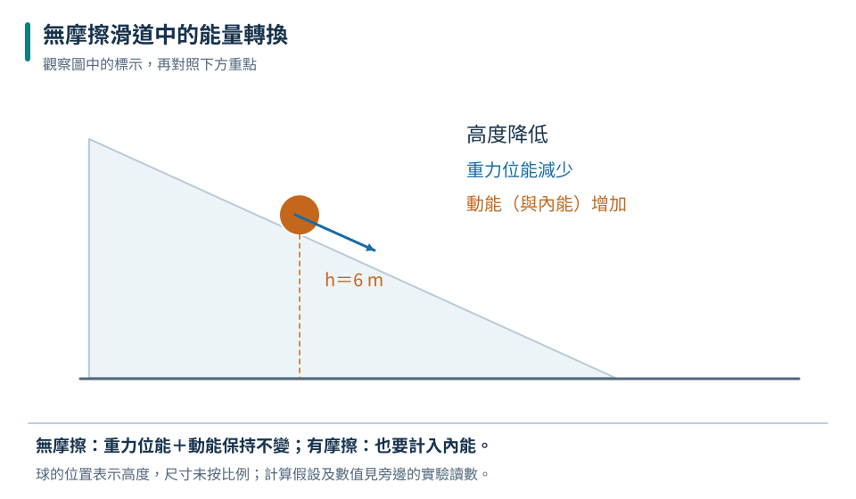

先看方向與位移
有施力不保證做功；背包靜止時，人對包的力沒有造成位移。
九上 · 理化 · 第 3 章
把書包提上樓要付出能量，抱著它站著卻不一定對書包做物理上的功。本章先把功與功率說清楚，再追蹤物體的動能、位能如何改變。你也會利用槓桿與滑輪比較省力的代價，並用能量守恆和效率檢視能源科技。
先備概念：知道力、位移、速度與質量、能求比例與百分率、會判斷力的方向
LEARN & EXPLAIN
物理上的功描述力使能量轉移的程度。在力固定且與位移同方向時，功 W＝F×s，單位焦耳（J），1 J＝1 N·m。力與位移反方向時做負功；力與位移垂直，或受力物體沒有位移時，該力做功為零。討論功一定要說清楚是哪個力對哪個物體做功。
平均功率是做功或轉移能量的快慢，P＝W／t，單位瓦特（W），1 W＝1 J/s。做相同的功，花越少時間，平均功率越大。功與功率符號可能都見到 W，但前者是變數、後者是單位，應依上下文判讀。人體即使外觀看起來不動，也可能有代謝耗能，不能和對外物體做功直接畫上等號。
有施力不保證做功；背包靜止時，人對包的力沒有造成位移。
功率大不保證每次總做功較多，也可能只是完成時間較短。
此處只判斷重力的功，其他力與人体耗能要另行分析。
做功 120 J；平均功率 20 W。
「我很累」不是判斷物理功的條件；要看指定力與物體位移。
LEARN & EXPLAIN
動能是與運動有關的能量，E動＝½mv²，質量用 kg、速率用 m/s，結果為 J。相同速率下，質量加倍則動能加倍；相同質量下，速率加倍則動能變成四倍。因此提高行車速率會大幅增加煞停時需要轉移的能量。
近地表的重力位能可寫成 E位＝mgh，高度 h 必須相對於指定的零位能面。零點可自行選擇，真正影響能量轉換的是位能的變化。被拉長或壓縮的彈簧也可儲存彈性位能，釋放後轉成動能；本課以定性比較為主，不要求背誦彈簧能量公式。
速率增為三倍，動能會是九倍。
改變零點會改變位能數值，但不改變同一段升降的位能差。
| 速率（m/s） | 動能（J） |
|---|---|
| 1 | 1 |
| 2 | 4 |
| 3 | 9 |
| 4 | 16 |

依 E動＝½×2×v² 計算，動能不是與速率成正比。
動能 16 J；重力位能 60 J。
位能不是物體獨有且絕對固定的數字，必須交代參考高度。
LEARN & EXPLAIN
能量可以在動能、位能、內能、化學能與電能等形式間轉換，也可在物體之間傳遞。在把相關物體與環境都納入後，總能量守恆。由高處下落的物體，重力位能減少，動能增加；上升時則反向轉換。
力學能通常指動能與位能的總和。忽略空氣阻力、摩擦等使能量轉成內能的作用時，系統力學能可保持不變。有摩擦時，力學能會減少，但減少的部分可轉為物體及環境的內能、聲等，總能量仍守恆。做題前要先說明系統範圍及有沒有耗散條件。
無摩擦、忽略阻力是力學能守恆的重要條件。
能量沒有消失，但常有部分分散成不容易再利用的內能。

圖中兩球表示同一物體在不同時刻的位置；高度降低時，重力位能轉成動能。
動能為 30 J。
機械因摩擦停下，不表示能量被消滅；應找能量轉到哪個物體與哪種形式。
LEARN & EXPLAIN
槓桿繞支點轉動，力的轉動效果取決於力與力臂。力臂是支點到力作用線的垂直距離；平衡時，兩側相反轉動效果相等，可寫成 F₁d₁＝F₂d₂。施力臂比抗力臂長時能省力，但施力端通常要移動較長距離，理想機械並不省功。
理想定滑輪可改變施力方向，不減少提起重物所需的力；單一理想動滑輪若由兩段平行鉛直繩子支撐，繩張力相同，每段負擔一半重量。將物體提高 h，拉繩端需要移動 2h。實際裝置還有滑輪重量與摩擦，因此輸入功大於有用輸出功，效率＝有用輸出能量／輸入能量。
要量支點到力作用線的垂直距離。
理想機械省力時通常費距離，輸入與輸出功相等。
| 裝置 | 拉力（N） | 拉繩距離（m） | 輸入功（J） |
|---|---|---|---|
| 定滑輪 | 100 | 1 | 100 |
| 單一動滑輪（兩段垂直繩） | 50 | 2 | 100 |
忽略滑輪、繩重與摩擦，並採等速提升；兩種裝置所做的功相同。
施力為 20 N；力臂放大四倍，所需力降為四分之一。
定滑輪雖能讓人向下拉，卻不代表必然省力；改變方向與減少力是不同效果。
LEARN & EXPLAIN
能源是人們能取得並利用的能量來源。化石燃料和核燃料的自然補充速率遠慢於人類使用，通常列為非再生能源；太陽、風、水力與地熱等通常列為再生能源。不同來源都需要設備、材料與合適環境，再生不代表全天候供應不變或完全沒有環境影響。
評估能源科技，應比較有用輸出、總輸入、穩定性、儲存方式及環境代價。太陽能板把部分入射太陽能轉為電能，其餘多轉成內能或被反射；抽蓄系統用電把水抽高，稍後放水發電，主要功能是儲能與調節供電，不是創造新的能量。節能常來自降低不必要的轉換損失與使用需求。
效率小於 100% 不違反守恆，代表有用輸出只占總輸入的一部分。
電池與抽蓄要先充入能量，不能把它們當作永遠自行供能的來源。
| 裝置 | 輸入（J） | 有用輸出（J） | 其他輸出（J） | 效率 |
|---|---|---|---|---|
| 甲 | 1000 | 700 | 300 | 70% |
| 乙 | 1000 | 850 | 150 | 85% |
「其他輸出」仍是能量，可能成為設備或環境的內能。
往返效率為 75%，損失的可用電能主要轉為內能等形式。
節能設備不會創造能量；效率提高是讓相同目的所需輸入減少。
TRY, OBSERVE, EXPLAIN
REVIEW
有施力不保證做功；背包靜止時，人對包的力沒有造成位移。
回到這一節複習速率增為三倍，動能會是九倍。
回到這一節複習無摩擦、忽略阻力是力學能守恆的重要條件。
回到這一節複習要量支點到力作用線的垂直距離。
回到這一節複習效率小於 100% 不違反守恆，代表有用輸出只占總輸入的一部分。
回到這一節複習CHAPTER TEST
先獨立作答，再看解析。中難與難為編者估計，尚未經學生實測校準。